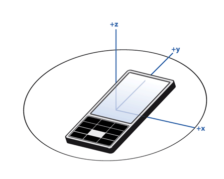
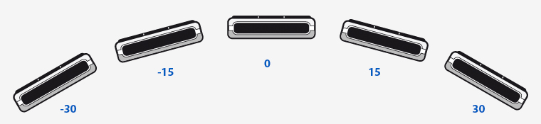

QRotationReading Class Reference
The QRotationReading class represents one reading from the rotation sensor. More...
#include <QRotationReading>
Inherits QSensorReading.
This class was introduced in Qt Mobility 1.0.
Properties
- 1 property inherited from QSensorReading
- 1 property inherited from QObject
Public Functions
| void | setX ( qreal x ) |
| void | setY ( qreal y ) |
| void | setZ ( qreal z ) |
| qreal | x () const |
| qreal | y () const |
| qreal | z () const |
- 4 public functions inherited from QSensorReading
- 29 public functions inherited from QObject
Additional Inherited Members
- 1 public slot inherited from QObject
- 1 signal inherited from QObject
- 1 public variable inherited from QObject
- 4 static public members inherited from QObject
- 7 protected functions inherited from QObject
- 2 protected variables inherited from QObject
Detailed Description
The QRotationReading class represents one reading from the rotation sensor.
QRotationReading Units
The rotation reading contains 3 angles, measured in degrees that define the orientation of the device in three-dimensional space. These angles are similar to yaw, pitch and roll but are defined using only right hand rotation with axes as defined by the right hand cartesian coordinate system.

The three angles are applied to the device in the following order.
- Right-handed rotation z (-180, 180]. Starting from the y-axis and incrementing in the counter-clockwise direction.
- Right-handed rotation x [-90, 90]. Starting from the new (once-rotated) y-axis and incrementing towards the z-axis.
- Right-handed rotation y (-180, 180]. Starting from the new (twice-rotated) z-axis and incrementing towards the x-axis.
Here is a visualisation showing the order in which angles are applied.

The 0 point for the z angle is defined as a fixed, external entity and is device-specific. While magnetic North is typically used as this reference point it may not be. Do not attempt to compare values for the z angle between devices or even on the same device if it has moved a significant distance.
If the device cannot detect a fixed, external entity the z angle will always be 0 and the QRotationSensor::hasZ property will be set to false.
The 0 point for the x and y angles are defined as when the x and y axes of the device are oriented towards the horizon. Here is an example of how the x value will change with device movement.
Here is an example of how the y value will change with device movement.

Note that when x is 90 or -90, values for z and y achieve rotation around the same axis (due to the order of operations). In this case the y rotation will be 0.
Property Documentation
x : const qreal
This property holds the rotation around the x axis.
Measured as degrees.
Access functions:
| qreal | x () const |
See also QRotationReading Units.
y : const qreal
This property holds the rotation around the y axis.
Measured as degrees.
Access functions:
| qreal | y () const |
See also QRotationReading Units.
z : const qreal
This property holds the rotation around the z axis.
Measured as degrees.
Access functions:
| qreal | z () const |
See also QRotationReading Units.
Member Function Documentation
void QRotationReading::setX ( qreal x )
Sets the rotation around the x axis to x.
See also x().
void QRotationReading::setY ( qreal y )
Sets the rotation around the y axis to y.
See also y().
void QRotationReading::setZ ( qreal z )
Sets the rotation around the z axis to z.
See also z().